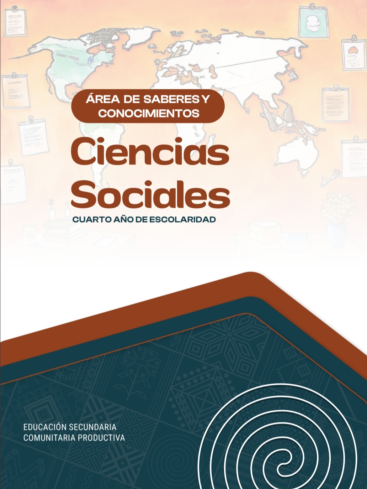
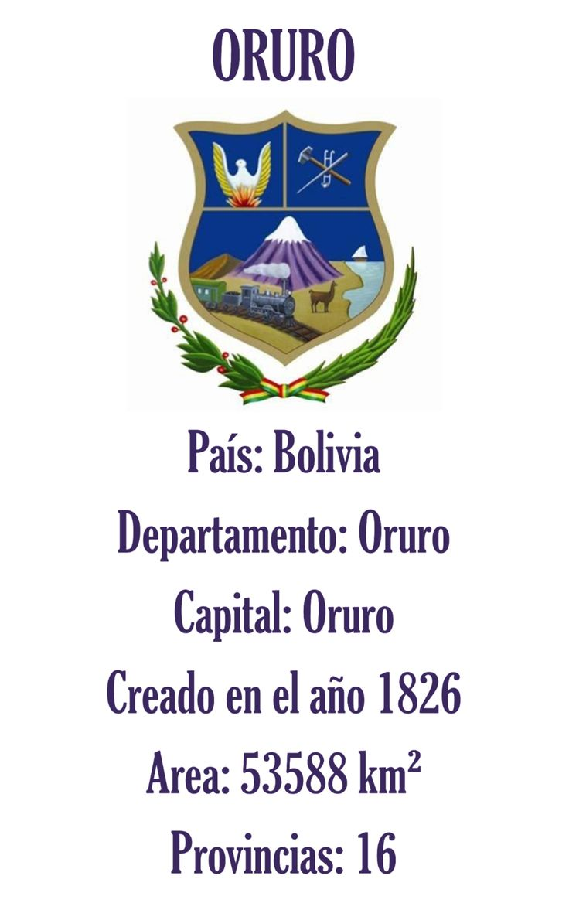
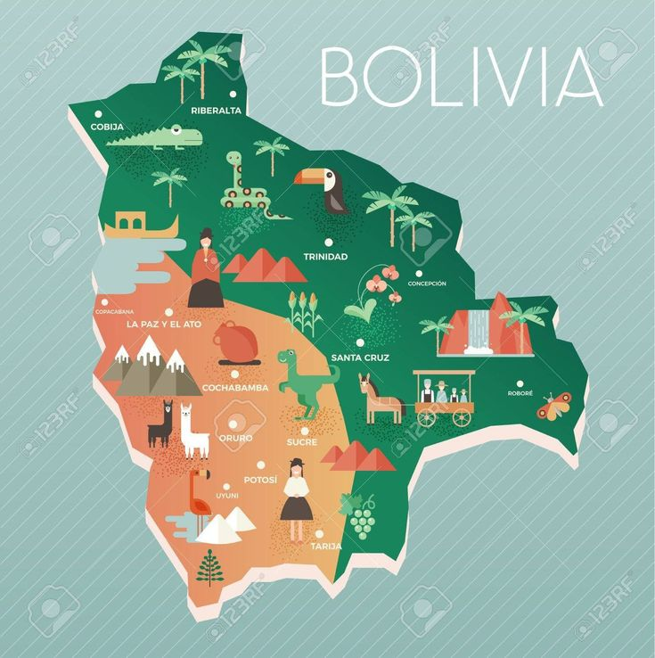
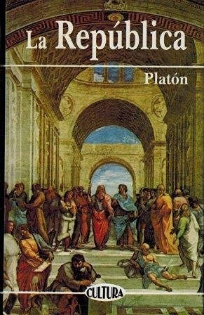
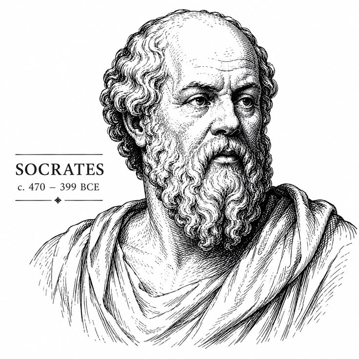
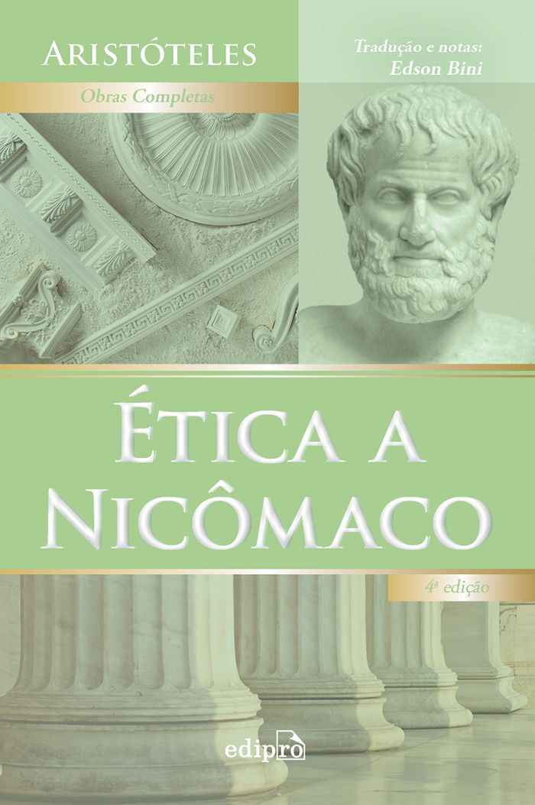
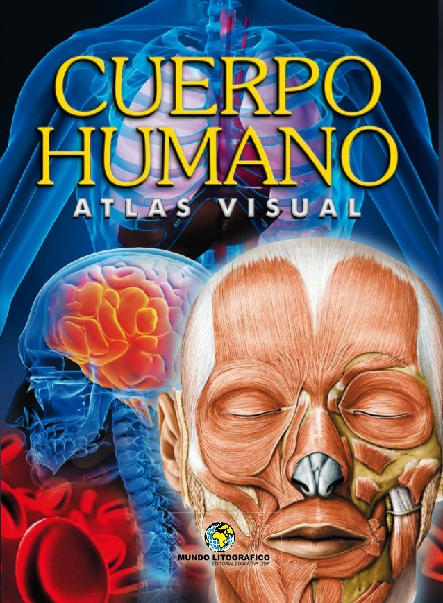
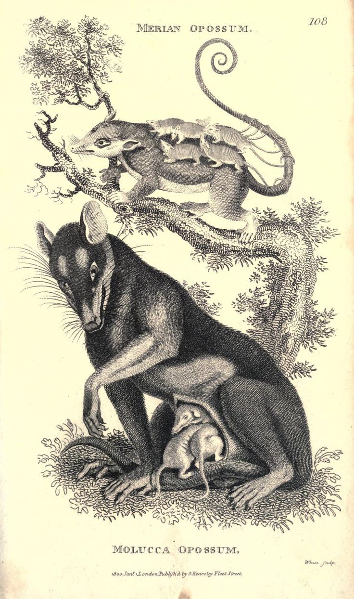

Catálogo Bibliográfico
libros disponibles

Patrimonio y Folclore de Oruro
Investigación Regional • Cultura
Estudio sobre el Carnaval de Oruro, expresiones dancísticas y riqueza patrimonial.




